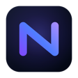

A focused DevTools panel to inspect, filter, and debug your app's network requests and console logs. Explain failures to AI in one click.
Detecting your browser...
Every fetch/XHR with method, status, duration, size and content-type. Filter by errors, slow, type, or search URLs and bodies.
Headers (important ones highlighted, secrets masked), payloads, and response bodies with JSON syntax highlighting.
Click a key to copy its path (data.items[0].id), click a value to copy it.
An integrated console panel shows the page's logs right beside the requests.
A mini timeline per request, plus sort by slowest/largest/status and group by domain.
Copy as cURL, fetch, or raw response. Export the session to HAR or JSON.
Hit a failing request, click Copy for AI, and paste a ready-made, secret-masked debug brief into your assistant, with what failed, where to look in your codebase, the full request/response context, and recent console errors.
# Failed network request | debug brief ## What failed - `GET https://api.example.com/v1/users/42` → **500** | a 5xx server-side error ## Where to look - Endpoint path: `/v1/users/42` - Correlate with backend logs using: `x-request-id=req-8f3a…` ## Ask 1. Most likely cause 2. Which file/function to inspect 3. A concrete fix
Current browser support:
Build from source:
npm install npm run build # chrome://extensions → Developer mode → Load unpacked → select dist/ # Open DevTools → "Nocturne" tab